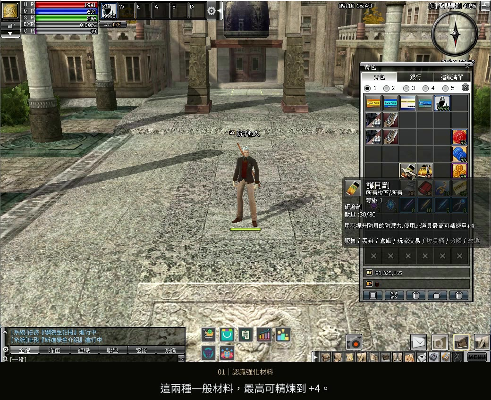
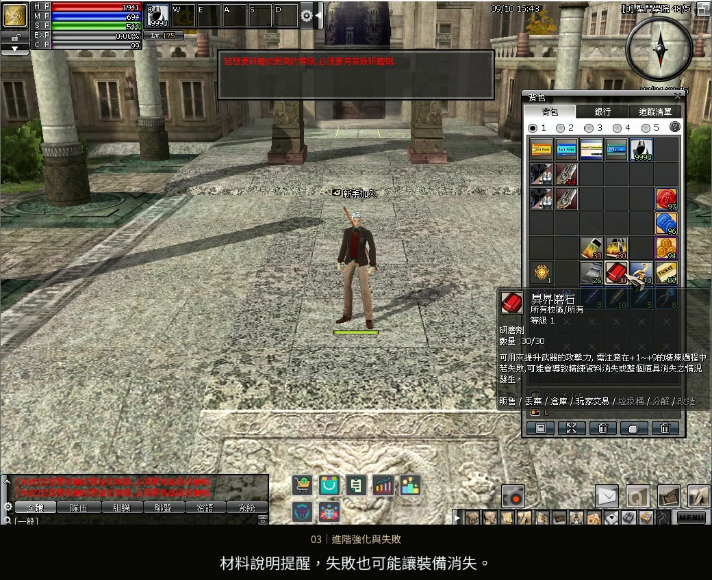
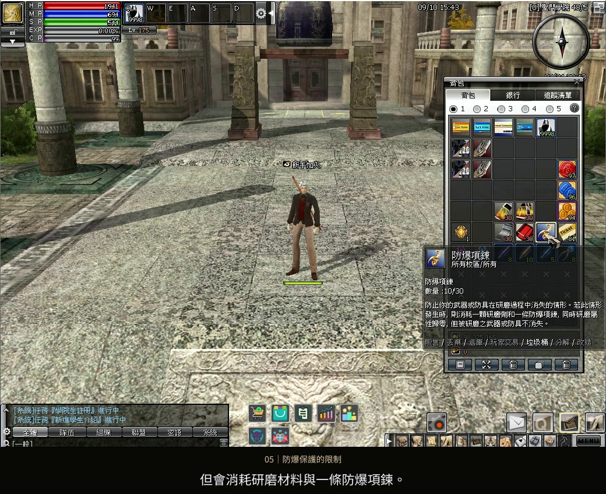

先確認強化材料
武器用磨石，防具用護貝劑
本篇示範的一般磨石與護貝劑，最高可精煉到 +4。想繼續強化，先確認進階材料的適用範圍；每次操作後，查看裝備名稱前方的加值，以及攻擊力或防禦力變化。
遊玩指南 05 / 裝備強化
武器用磨石，防具用護貝劑，跟著實機畫面完成強化。
防爆不保證成功，也不保證保留強化加值。
影片暫時無法載入，請重新整理或使用下載影片連結。下方圖文仍可查閱。
選擇章節，跳到對應操作與規則說明。
「+4」是本篇一般磨石與護貝劑的使用上限，不代表所有裝備的最高強化等級。防爆項鍊須先穿戴；消耗與歸零是觸發保護時的規則，不代表每次失敗都一定消耗項鍊。

本篇示範的一般磨石與護貝劑，最高可精煉到 +4。想繼續強化，先確認進階材料的適用範圍；每次操作後，查看裝備名稱前方的加值，以及攻擊力或防禦力變化。

本篇以異界磨石示範進階強化。強化失敗可能讓加值下降或歸零，材料說明也提醒裝備可能消失；執行前，先閱讀實際使用道具的說明。

需要防爆保護時，先在裝備欄確認防爆項鍊已穿戴。依道具說明，觸發保護時裝備不會消失，但會消耗研磨材料與一條防爆項鍊，同時強化等級歸零。